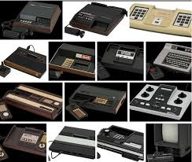

A doua generatie
La primele console, codul mașină pentru unul sau mai multe jocuri se făcea cu ajutorul logicii discrete și era codat direct în microcipuri, așa că alte jocuri adiționale nu puteau fi rulate. În anii 1970 jocurile au început să fie distribuite și cu ajutorul casetelor. Programele erau stocate pe chip-uri ROM care erau montate în casete de plastic, acestea putând fi introduse în sloturile de pe console. Atunci când casetele erau introduse, microprocesoarele din console citeau din memoria casetei apoi rulau programul stocat.
Trei sisteme au dominat era consolelor de a doua generație în America de Nord, acestea având vânzări cu mult mai mari ca acele ale produselor rivale:
- În 1977, Atari a lansat consola pe bază de casetă: Video Computer System (VCS), ulterior denumită Atari 2600. Nouă jocuri au fost lansate pentru sezonul sărbătorilor, și mulțumită acestora ajunge să fie una dintre cele mai populare console a primelor generații.
- Intellivision, a firmei Mattel, lansată în 1980. Deși cronologic parte a ceea ce se numește era pe 8 biți, Intellivison avea un procesor unic, cu instrucțiuni pe 10 biți (odată cu mărirea numărului de biți se ajungea la o viteză sporită și exista o varietate mai mare de instrucțiuni) și regiștri pe 16 biți. Sistemul avea o grafică superioară consolei de la Atari, acest lucru ajutând Intellivion să devină foarte populară.
- Colecovision, o consolă și mai puternică decât restul sistemelor disponibile, a apărut pe piață în 1982 . Vânzările sistemului au crescut, dar din cauza prezenței a trei mari console pe piață și apariția unei multitudini de jocuri de calitate scăzută ce aveau să umple până la refuz rafturile magazinelor, piața se va prăbuși la numai un an după lansare.
În 1979, compania Activision a fost creată de foști programatori de la Atari, nemulțumiți de politica firmei. A fost prima companie dezvoltatoare de jocuri.
În 1983 a avut loc o scădere bruscă a popularității jocurilor numită și video game crash of 1983 care a fost provocată de suprasaturarea pieței din cauza calității foarte proaste a jocurilor oferite de terți, în special cele pentru sistemele Atari.
